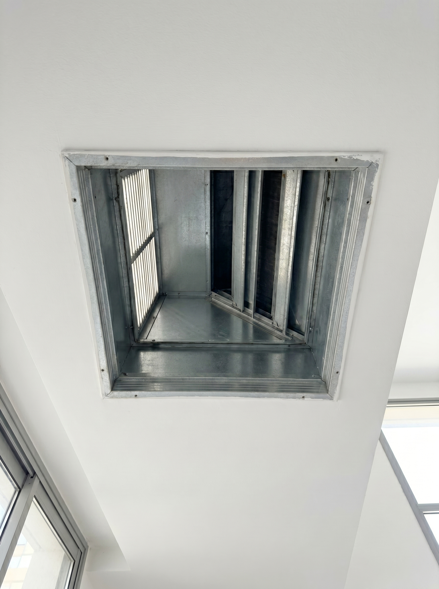
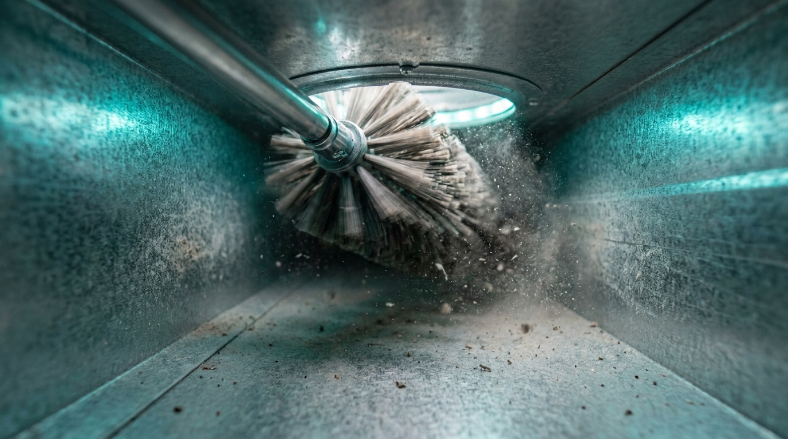
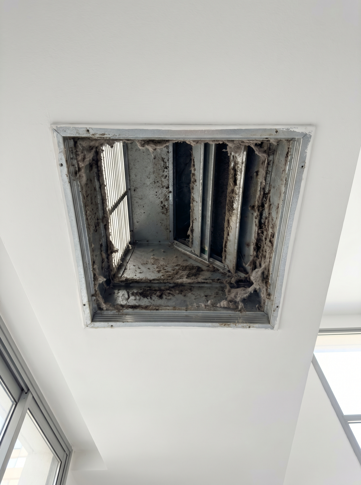
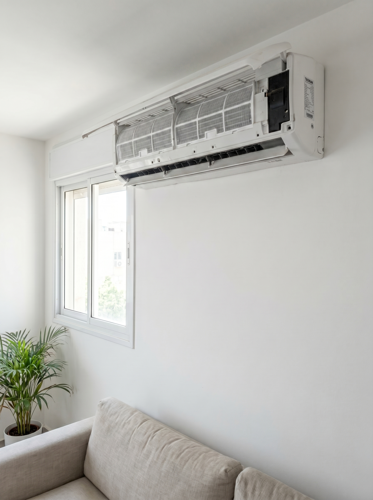
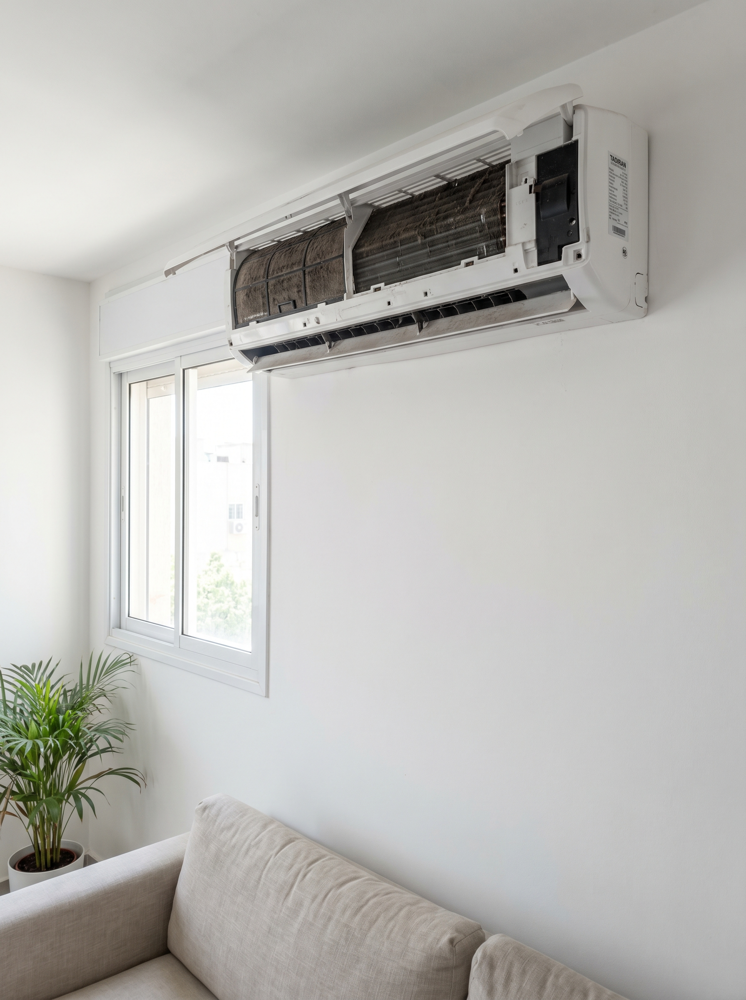
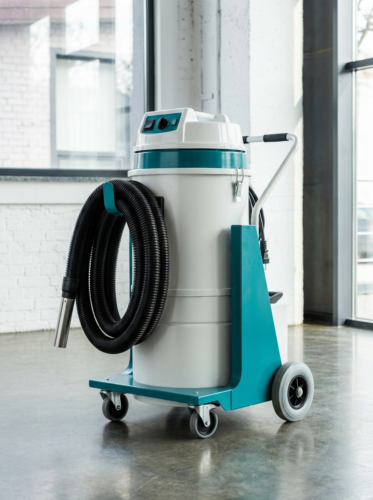
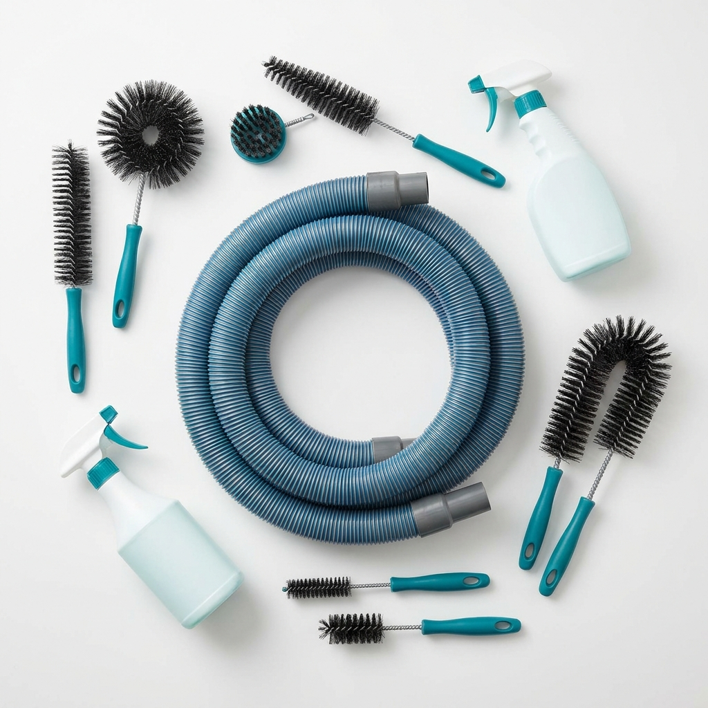
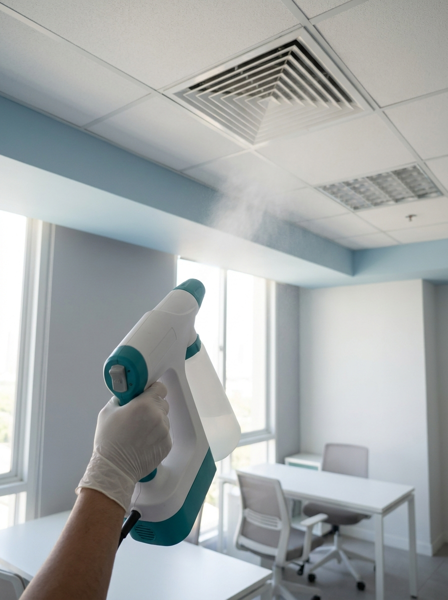

תעלת מיזוג ראשית

← גרור את הידית או לחץ על התמונה →
ניקוי וחיטוי תעלות מיזוג מרכזי לבתים, משרדים ועסקים — בסטנדרט הגבוה בישראל. אנחנו מראים לכם בדיוק מה ניקינו: לפני, ואחרי, על המערכת שלכם. ניקוי וחיטוי מקצועי — עם תיעוד לפני ואחרי על המערכת שלכם.


תעלות המיזוג הן "הריאות" של הבית או המשרד — כל האוויר שאתם נושמים עובר דרכן. עם השנים מצטברים בתוכן אבק, לחות, עובש וחלקיקים שאתם לא רואים. בכל פעם שהמיזוג נדלק, הם חוזרים לחלל ומסתובבים באוויר שאתם והילדים נושמים.
שכבות אבק ולכלוך לאורך כל התעלה — בדיוק במסלול שהאוויר עובר אליכם.
חום ולחות בתוך המערכת יוצרים תנאים מושלמים לעובש. גם מקור הריח הטחוב כשמדליקים מיזוג אחרי הפסקה.
כשהסליל והמפוח מתכסים באבק, המערכת עובדת קשה יותר, מקררת פחות טוב — וחשבון החשמל מטפס.
מהזמן אנחנו נמצאים בחלל סגור — נושמים את אותו אוויר ממוחזר.
החליקו את הידית וראו את ההבדל האמיתי. כל לקוח מקבל תיעוד מלא של המערכת שלו — לפני הטיפול ואחריו. בלי הבטחות, רק תוצאה שרואים בעיניים.

← גרור את הידית או לחץ על התמונה →


← גרור את הידית או לחץ על התמונה →
אנחנו לא "עושים סיבוב" וממשיכים הלאה. כל עבודה מתנהלת לפי תהליך מסודר, ואתם יודעים בדיוק מה קורה בכל רגע.
בדיקה וצילום של מצב התעלות מבפנים. אתם רואים בדיוק מה המצב לפני שמתחילים — בלי ניחושים.
מגיעים לכל נקודה במערכת המרכזית דרך הפתחים הקיימים — בלי שבירת קירות או תקרה.
קרצוף מכני של התעלות, ולאחריו חיטוי בערפול (Fogging) להסרת מזהמים ולאוויר רענן.
מצלמים שוב, ועוברים איתכם יחד על מה שנעשה. תיעוד מלא ומערכת שבאמת נקייה.
ניקוי תעלות מיזוג מרכזי דורש הרבה יותר משואב ביתי. אנחנו עובדים עם ציוד ייעודי שמגיע למקומות שאי אפשר לראות.

מערכת שאיבה עוצמתית שיוצרת לחץ שלילי בתוך התעלה — האבק והלכלוך נשאבים החוצה ונאספים, בלי שייפלט גרגר אחד חזרה לחלל שלכם.

מברשות מסתובבות ייעודיות שמגיעות לאורך התעלה ומשחררות אבק, לכלוך ושכבות שהצטברו לאורך השנים — גם בפינות הנסתרות.

חיטוי מבוקר בערפול שמטפל בעובש ובמזהמים — בלי ריחות אגרסיביים, רק אוויר רענן ובריא.
אנחנו מתייחסים לתעלות שלכם כאילו הן אצלנו בבית. יסודיות, שקיפות ומקצועיות — בכל עבודה.
קבלו הצעת מחירצילום לפני ואחרי, הסבר על כל שלב, ומעבר משותף בסיום. בלי הבטחות מעורפלות — רק תוצאה מוכחת.
עוברים תעלה-תעלה, יסודי, עד שהמערכת באמת נקייה — לא "נראית נקייה". בלי קיצורי דרך.
שאיבה בלחץ שלילי, קרצוף מכני וחיטוי בערפול — תוצאה שציוד ביתי פשוט לא מסוגל לה.
מגנים על רהיטים ורצפה, מסיימים והמקום נשאר נקי בדיוק כפי שהיה — חוץ מהתעלות.
כשכל הבית מקבל אוויר דרך תעלות, הלכלוך מצטבר עמוק במערכת — לא רק ליד היחידה.
אם מישהו בבית רגיש לאבק, ריחות או אוויר "כבד" — ניקוי תעלות עושה הבדל באוויר שנושמים.
במקום שבו אנשים שוהים שעות בחלל סגור, איכות האוויר משפיעה ישירות על נוחות, ריכוז ובריאות.
אבק בנייה וחלקיקים מוצאים את דרכם לתוך התעלות. ניקוי מוציא אותם מהמערכת.
ריח לא נעים מהפתחים הוא סימן מובהק לעובש ולחות שהצטברו בתוך התעלות.
ככל שהמערכת ותיקה ועובדת יותר, כך היא צוברת יותר לכלוך — והחשיבות של ניקוי תקופתי גדלה.
הסימנים הבולטים: ריח מחניק או טחוב כשמדליקים מיזוג, אבק שמצטבר סביב פתחי האוויר, או הרגשה שהמערכת עובדת קשה יותר ומקררת פחות טוב. אם משהו מזה מוכר — שווה לבדוק מה קורה בתוך התעלות.
ניקוי פילטר מטפל רק בחלק הקרוב ליחידה — וזה משהו שאפשר לעשות גם לבד. תעלות המיזוג עצמן ממשיכות לצבור אבק, עובש ולכלוך לאורך השנים, במקומות שהפילטר לא מגיע אליהם. ניקוי תעלות מקצועי מגיע עמוק לתוך המערכת — לשם הלכלוך האמיתי מצטבר.
זה תלוי בשימוש, בגיל המערכת ובסביבה. בבתים עם ילדים, חיות מחמד או אלרגיות — כדאי תדירות גבוהה יותר. אנחנו ממליצים לפי מצב המערכת בפועל, לא לפי לוח שנה קבוע.
מערכת נקייה זורמת טוב יותר ועובדת פחות קשה. כשיש פחות הצטברות לכלוך בתעלות ובמערכת, המיזוג יעיל יותר — ובמקרים רבים זה מתבטא גם בצריכת חשמל נמוכה יותר לאורך זמן.
ברוב המקרים אפשר להישאר כרגיל. אנחנו עובדים עם ציוד וחומרים מתאימים ומקפידים על אוורור ועבודה נקייה. אם יש שלב שבו כדאי להתרחק לזמן קצר — נעדכן אתכם מראש.
לא. אנחנו עובדים דרך הפתחים הקיימים והגישה לתעלות, עם מינימום התערבות במבנה. תמיד נסביר מראש אם יש משהו חריג שדורש התייחסות מיוחדת.
אנחנו עומדים מאחורי העבודה שלנו. מסבירים מראש מה מצב המערכת ומה אפשר להשיג, ומסיימים עם תיעוד מלא. אם משהו לא ברור או לא מרגיש תקין אחרי הטיפול — אנחנו כאן לבדוק ולתת מענה.
השאירו הודעה ונחזור אליכם לשיחת התאמה קצרה: נבין מה אתם מרגישים בחלל — ריח, אבק, תחושת כובד — וניתן הערכה מקצועית וכנה. בלי התחייבות, בלי אותיות קטנות.